作者：创世魂
●图片(写)
帮助文档如下图：
通过本属性可以设置GIF动画框要显示的gif图片。
如果想要清除图像设置本属性值为“空资源.空位图”即可。
注意：属性值为位图资源，引用后的图片会打包到程序内，任何东西都无法转换成位图资源。
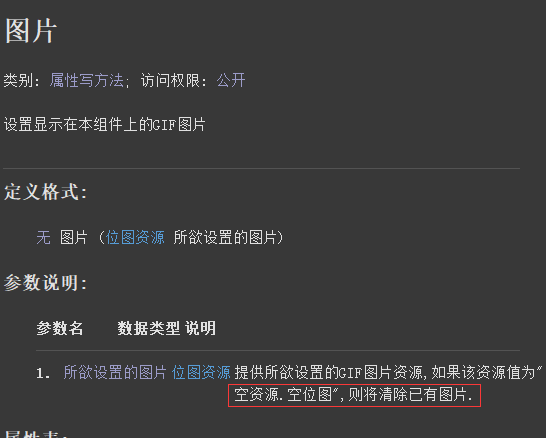
界面设计如下图：
配置模块后在基本组件中就可以看到“GIF动画框”。
将这个组件放到窗口上，选择右侧“图片”属性就可以导入图片。
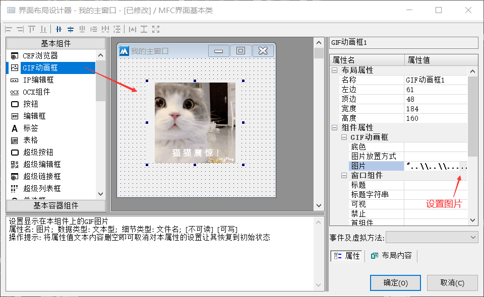
代码编写如下图：
保存后会自动生成属性代码，也可以通过属性代码这里进行修改图片。
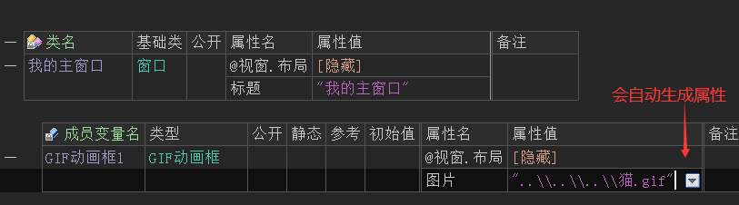
运行效果如下图：
最终GIF运行效果。
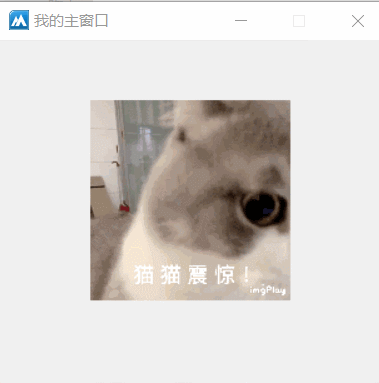
● 图片放置方式(写)
帮助文档如下图：
通过本属性可设置图片放置方式，默认为“图片居中”。
属性值调用方式：图片放置方式.XXX
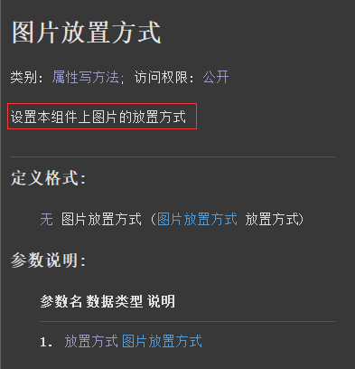
界面设计如下图：
打开界面设计器选中图片框，并设置一个边框效果，用于观察图片框边界位置。
设置后可以看出，整个GIF图片是居中显示的效果。
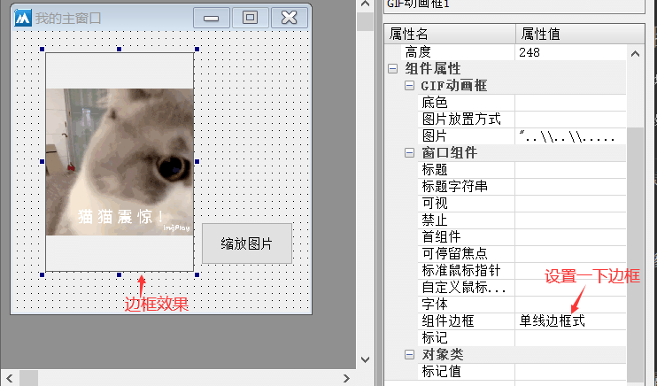
代码编写如下图：
按钮点击后设置“图片放置方式”属性为“图片放置方式.缩放图片”。
这个效果会让图片铺满整个图片框。
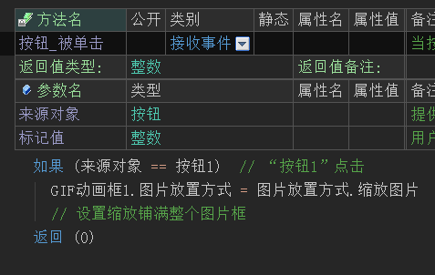
运行效果如下图：
最终可看到图片框被图片铺满。
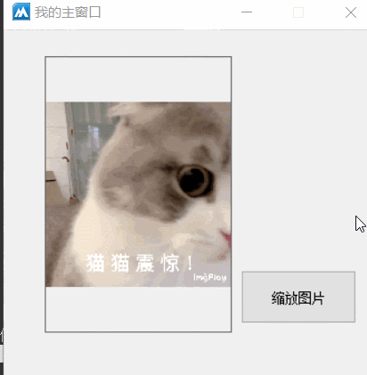
● 底色(写)
帮助文档如下图：
通过本属性可以设置底色，默认底色为“颜色类.默认色”。
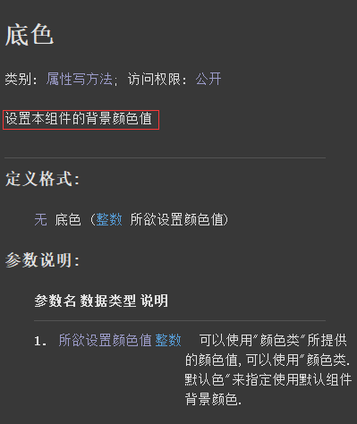
代码编写如下图：
按钮点击后修改底色为红色。
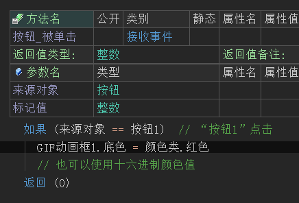
运行效果如下图：
最终可看到底色被修改为红色。
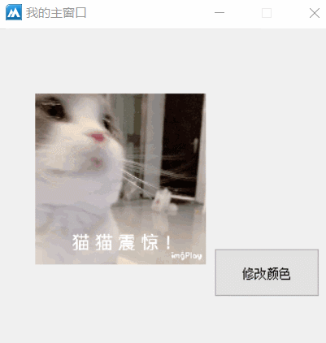
● 取图片尺寸
帮助文档如下图：
通过本方法可以取出GIF动画框中的图片尺寸，返回尺寸类。
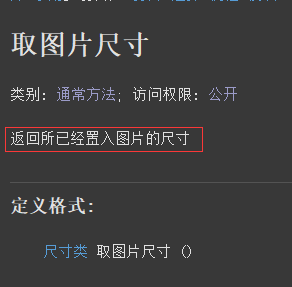
代码编写如下图：
按钮点击后取出尺寸类对象，通过本对象取出宽度和高度信息。
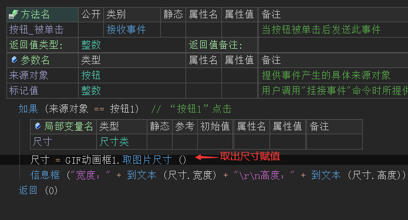
运行效果如下图：
最终可看到尺寸信息被取出。
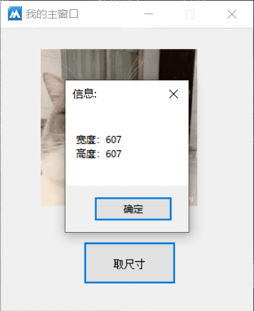
● 播放
帮助文档如下图：
调用本方法可以播放或者暂停GIF动画。
参数提供真则继续播放，否则暂停。
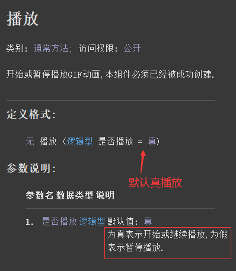
界面设计如下图：
在界面中增加两个按钮，用于播放和暂停控制。
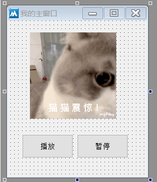
代码编写如下图：
两个按钮分别点击后进行播放或暂停操作。
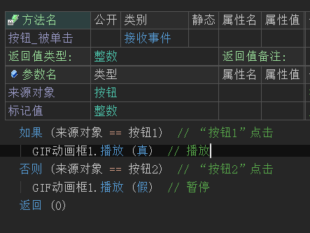
运行效果如下图：
最终可以看到GIF动画可以被暂停，也可以继续播放。
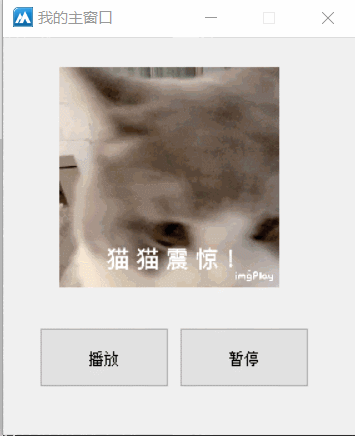
● 是否正在播放
帮助文档如下图：
通过本方法可以判断是否正在播放，返回真表示正在播放，否则返回假。
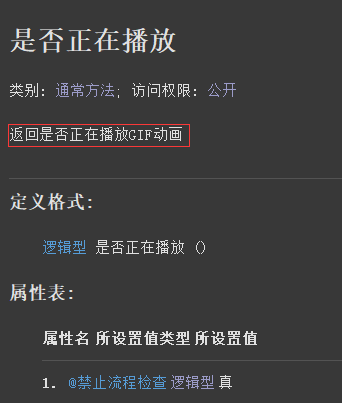
代码编写如下图：
按钮1点击后执行如果命令来判断本方法的返回值，并执行不同的信息框提示。
按钮2点击后执行暂停操作。
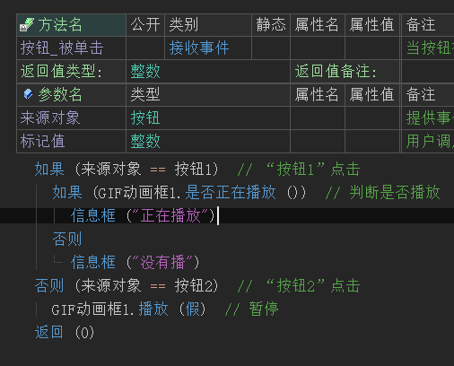
运行效果如下图：
最终可以看到，本方法可以成功判断当前播放状态。
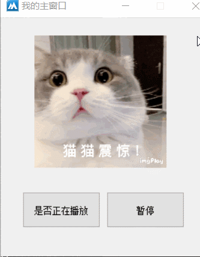
● 置图片
帮助文档如下图：
调用本方法可以修改图片，共有三个参数。
参数1：提供要修改的位图资源图片。
参数2：提供播放背景色。
参数3：如果本参数为假，则上一张图片会暂停，但是新的图片不会加载出来，需要手动调用“播放()”方法才会加载。
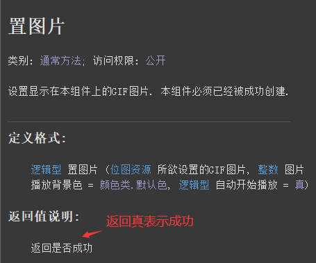
代码编写如下图：
按钮1点击后调用本方法设置图片，但是不自动播放。
按钮2点击后播放。
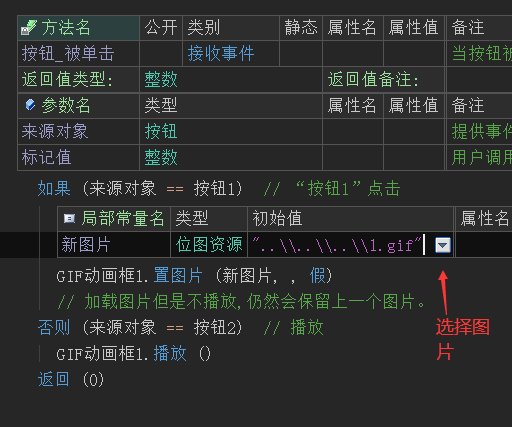
运行效果如下图：
最终可看到图片可以被修改并播放。
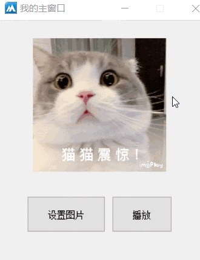
● 置图片数据
帮助文档如下图：
调用本方法可以设置字节集图片数据，成功返回真。
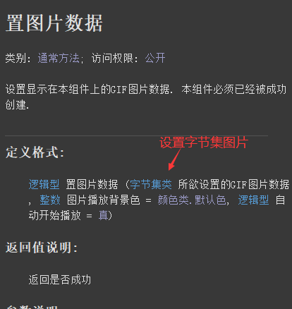
代码编写如下图：
1、按钮点击后通过“读入文件()”方法读取字节集数据。
2、调用“置图片数据()”方法设置字节集即可。
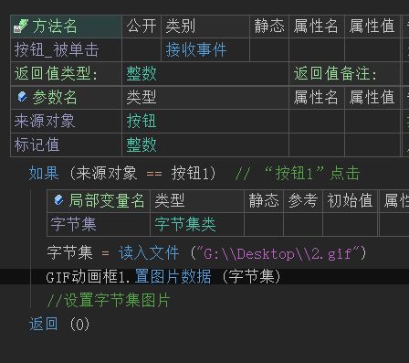
运行效果如下图：
最终可看到图片被成功替换。
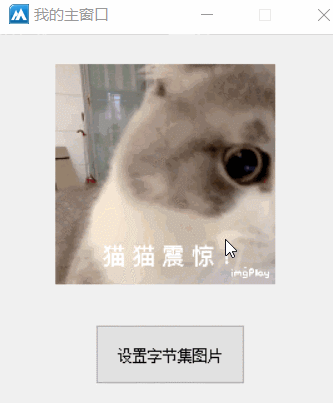
● 置图片文件
帮助文档如下图：
通过本方法可以直接载入指定路径的GIF图片。
注：必须提供完整的路径。
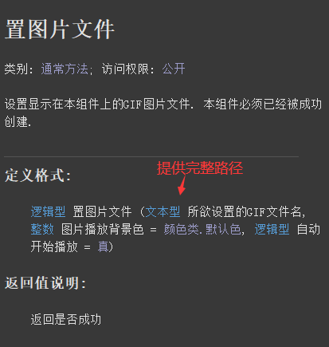
代码编写如下图：
将指定的图片路径填入本方法的参数中即可。
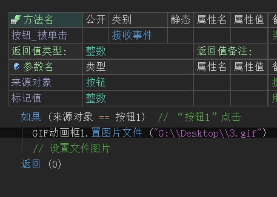
运行效果如下图：
最终可看到图片被成功替换。
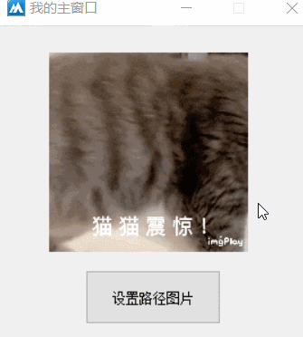